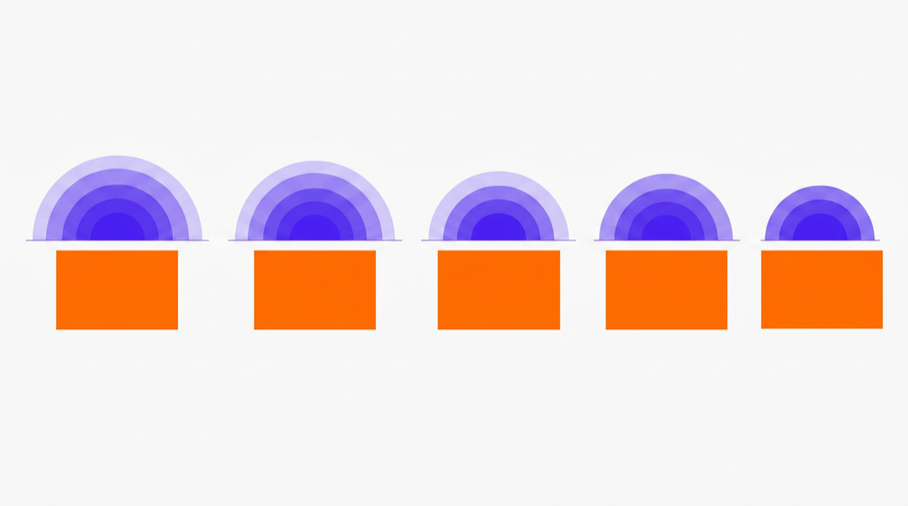
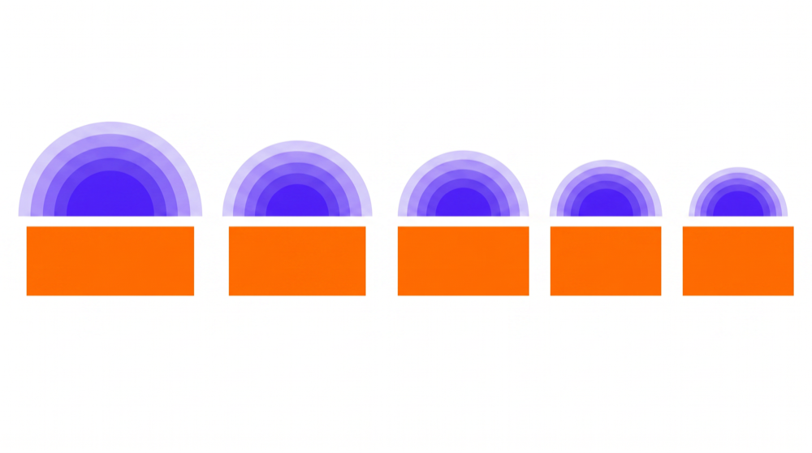
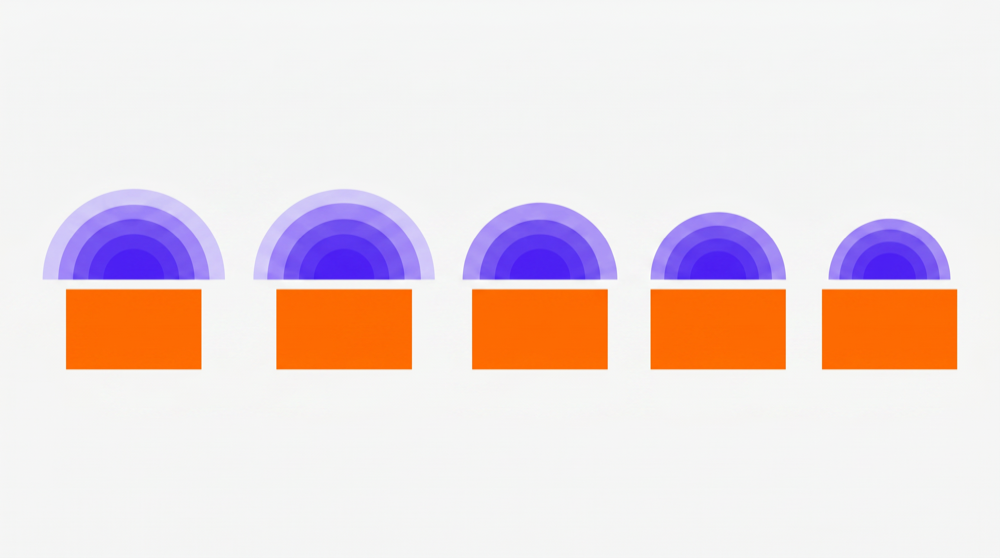
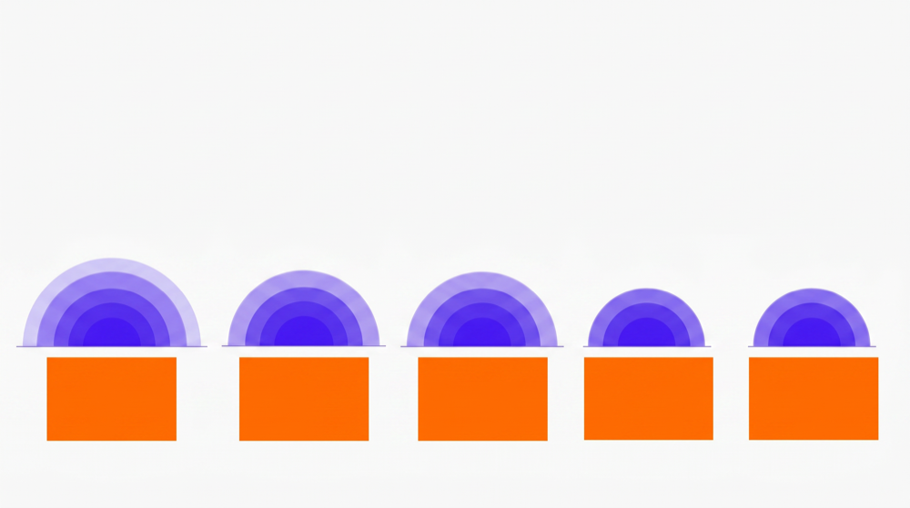
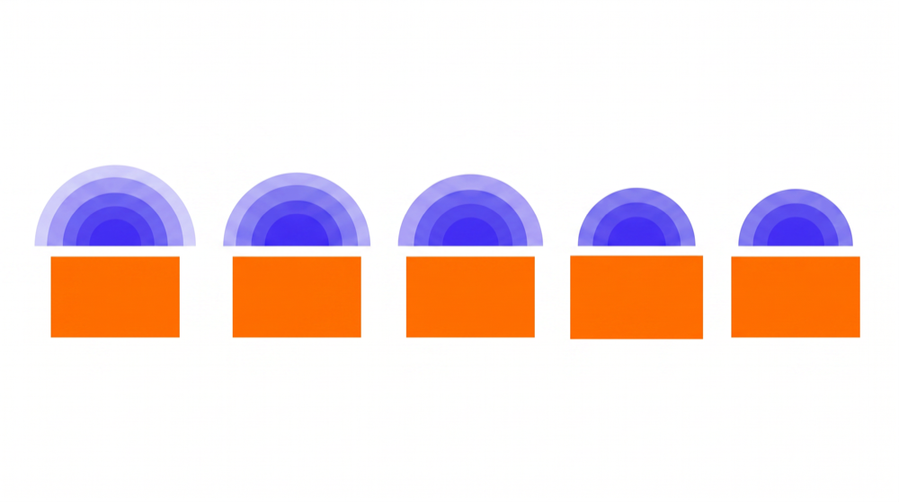
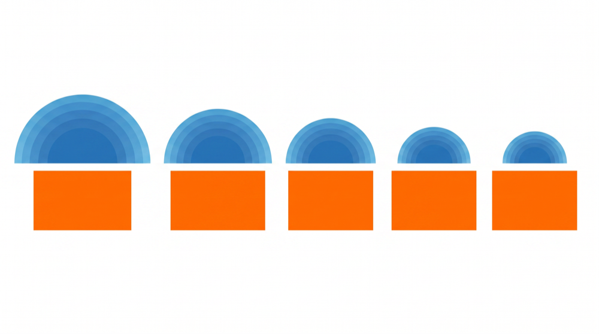
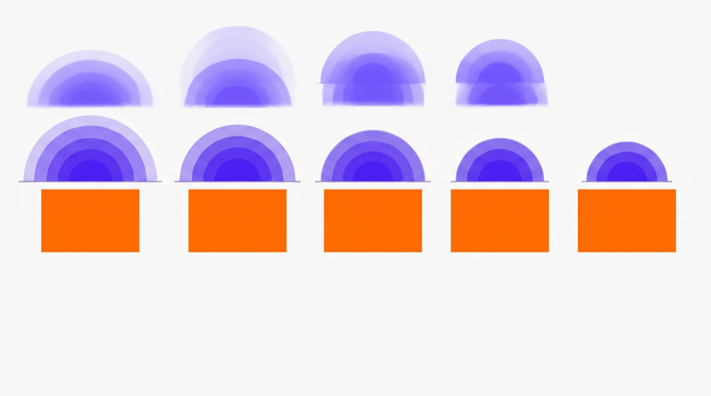
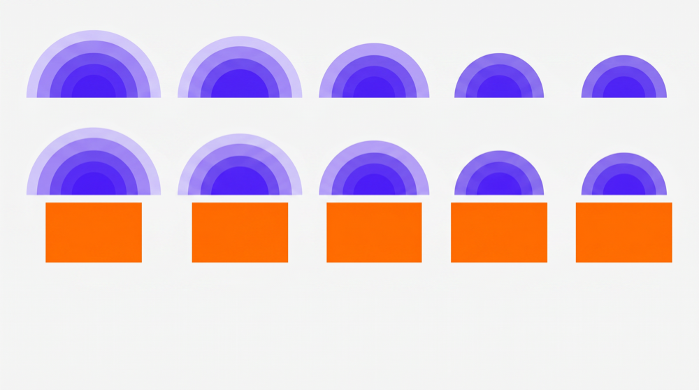
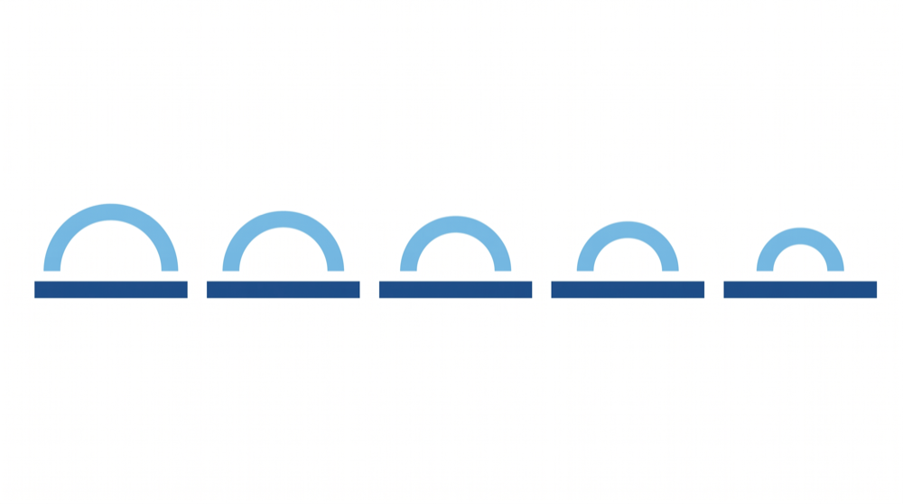

02
Generate a batch, keep the cleanest
Gemini · image modelhuman pick
The image model is non-deterministic — every run varies in quality, spacing, and how faithfully it matches the reference. So instead of trusting one output, we generate a batch and a human keeps the cleanest one (highlighted). This is the batch for a single step count.









